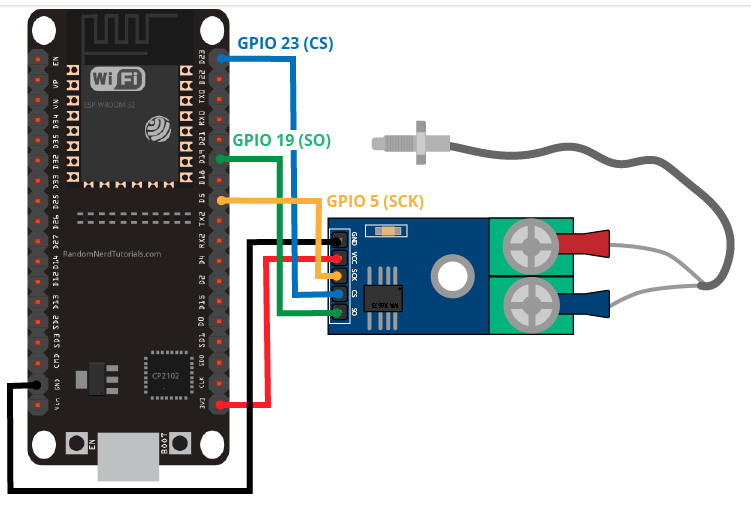

Configuració
This is the new board from Espressif, ESP32-S3 DevKit. ESP32-S3 is a dual-core XTensa LX7 MCU, capable of running at 240 MHz. Apart from its 512 KB of internal SRAM, it also comes with integrated 2.4 GHz, 802.11 b/g/n Wi-Fi and Bluetooth 5 (LE) connectivity that provides long-range support. It has 45 programmable GPIOs and supports a rich set of peripherals.
La ESP32-S3 té un processador de doble nucli de la marca extensa MX7 MCU que processa dades a 240 MHz. Això pot supossar aproxiadamet 240 milions d'operacions amb decimals o amb coma flotant o FLOPS per segon. Aquesta dada és crítica perquè ens indica la potència de càlcul dels microcontroladors i dels processadors que controlen als robots. Fem una comparativa: Un Arduino UNO té una capacitat de processament de 16 MHz, respecte ESP32-S3 és 15 vegades més lent. Raspberry Pi 4 té 1,5 GHz, que és 6,25 més ràpid que ESP32-S3. Tianhe-3 i El Capitan són els superordinadors més potents en 2025 i han arribat a exaflops, és a dir, 1 trilió d'operacions matemàtiques per segon. És important decidir quin microcontrolador, ordinador o superordinador és adequat per cada aplicació, perquè no podré fer aplicacions que requereixin molt càlcul en un microcontrolador petit.
La memòria interna del ESP32-S3 també és un factor limitant, en aquest cas 512 kB, associada al processador Extensa. Arduino UNO té una meòria RAM més baixa, de 2 kB, que ès la que ve del seu processador AVR. RAM significa Random Access Memory, que és la memòria interna d'accès ràpid en la qual s'executen els programes. ESP32-S3 té 256 vegades més memòria, i un ordinador com el meu té 8 GB, que són més de 15000 vegades més que ESP32-S3.
La memòria ROM és Read Only Memory o el disc dur, que és la capacitat total de memòria del microcontrolador o de l'ordinador. L'Arduino UNO té 32 kB de memòria ROM, l'ESP32-S3 té 384 kB de memòria ROM i el meu ordinador té 119 GB de meòria, que són un gran número de vegades diferents.
Entrades GPIO
GPIO significa General Purpose Input Output, és a dir, entrades i sortides de pròposit general. Aquestes pins permeten ser utilitzats com entrades analógiques, entrades digitals, sortides analógiques, sortides digitals, i a vegades també com a rellotges o parts de protocols de comunicació. Les GTIO estan normalment en microcontroladors avançats o moderns, com ESP32S3 i també en microordenadors-microordenadors, com Raspberry Pi. Arduino Uno Rev 3 no té GPIO, però es poden utilitzar com a GPIOs les entrades analógiques de A0 a A5 i també es poden piratejar / modificar altres pins.
Protocols de comunicació
Diferents maneres que té una placa (Arduinno Uno o ESP32S3) de connectarse en qualsevol altre dispositiu, com: un sensor, el nostre portatil, una pantalla LCD, OLED, un targeta SD, etc.
Comunicació síncrona
Coordinació entre el receptor i transmisor per enviar dades, això es fa per una transmisió o línia de rellotge que es diu SCK o CLK serveix per a que a cada puls de rellotge indica que s'ha de llegir o escriure un bit, i el transmisor i el receptor es mouen al mateix ritme del rellotge que fa possible entre el microcontrolador i altres dispositius electronics, com: sensor, targetes SD, pantalles TFT, etc.Hi ha dos protocols principals síncrons: SPI i I2C
SPI significa Serial Periferal Interface i I2C significa Inter-Integrated Circuit
La comunicació / protocols síncrons és més ràpida i eficient en velocitats altes i és més precisa perque els dispositius estan sincronitzats, però necessitem posar més cables per al rellotge i altres senyals
Comunicació asíncrona
No hi ha cap rellotge compartit, el emisor i el transmisor funcionen de forma totalment independents
Cada byte (conjunt de bits) o paquet de dades porta uns bits que es poden indentificar com a bits d'inici i bits de final (convinació de 0 i 1 que és sempre igual, i que ens indica que ha començar o acabat la transmissió)
El transmisor i el receptor han d'acordar la velocitat de transmisió, e Arduino Uno Rev3 és 9600 bauds o bits per segon i en ESP32S3 és 115200 bauds
Exemples de protocols asíncrons són UART i RS232
UART vol dor Universal Asynchronous Receiver-Transmiter, i RS232 és el protocol o port sèrie antic
Avantatges
- Més senzill de cablejar
- Ideal per distancies llargues (de cable)
- Comunicacions simples
Inconvenients
- Menys eficient a velocitats altes
- Risc de desincronització si no respecta la velocitat acordada
SPI
Exemple de SPI amb Arduino Uno
El pin 11 és un MOSI que significa Master Out Slave In, i el pin 12 és MISO Master In Slave Out
El pin MOSI envia dades des de l'Arduino (mestre o master) cap els periferics (slaves o esclaus). Per exemple, si connectem un mòdul SD o targeta de memòria o una pantalla o display SPI significa que les dades s'enviarien pel pin 11 o MOSI.
El pin MISO farà el contrari que el pin MOSI, o sigui, rep dades des d'un esclau cap a Arduino i l'esclau pot ser el mateix que l'anterior, connectem una targeta de memòria o una pantalla
A més s'utilitzen altres pins com el SCK (o pin 13 d'Arduino Uno) que significa Serial Clack, que enviarà un senyl de rellorge que segueix la comunicació, l'Arduino és el mestre que genera aquest senyal que segueixen tots els esclaus.
El pin 10 és el pin SS que significa Slave Select, diu quin esclau està actiuen un moment determinat.
Es necessiten 2 pins més d'alimentació que són el VCC de 5v o el GND que és el terra, que tanca el circuit.
A continuació veurem un codi per comprovar si la targeta SD està connectada correctament.
#include // Afegim la biblioteca C++ Arduino que controla el protocol de comunicació SPI.
#include // Afegim o importem la biblioteca que controlen els arxius per "Read Write Rewrite Delate" és a dir,
per llegir arxius, escriuse'ls, borrar-los
const int chipSelect = 10; // Tem que el pin 10 sigui un número enter i constant i s'anomeni "chipSelect" perquè
controlarà la secció de la targeta SD. Aquest pin serveix per activar la targeta SD, quan l'Arduino vol
comunicar-se amb ella.
void setup (){
Serial.begin(9600); // 9600 són bauds, els bauds són la quantitat de símbols transmesos per segon, en la comunicació
sèrie 1 baud = 1 bit/segon, però en alguns casos 1 baud pot ser més d'1 bit/segon.
Serial.print("Inicialitzant la targeta SD"); // Això significa que sortirà a la consola aquest misatge.
if(!SD.Begin(chipSelect)){ // El signe ! nega (si no funciona SD)
Serial.println("Error: no s'ha detectat la targeta SD"); // Si es compleix la condició anterior, posa aquest
missatge a la consola.
return; // Segnifica que cabi la funció setup si la targeta no està disponible
} // Aquesta clau tanca el condicional si no detecta la tergeta SD.
Serial.println("Targeta SD detectada correctament");
File fitxer = SD.open ("dades.txt"); // File és una classe d'objectes que gestiona arxius i quan escric un nom al
costat, com fitxer, declaro una variable per gestionar un fitxer. Si el fitxer existeix i es pot obrir correctament
la paraula fixter serà vàlida, en cas contrari, el fitxer donarà com a resposta nul.
if (fitxer){ // Vol dir, si el fitxer s'ha pogut obrir perquè és vàlid, executa el codi següent, i si no passa
directament per el else i mostra un error.
Serial.println("Llegint dades.txt"); // Ha començat a llegir el fitxer
Serial.begin(9600); //9600 cón bauds o els bauds
while(fitxer.available()){ // Mentre que hi hagin dades per llegir dins del fitxer
Serial.write(fitxer.read()); // El que faria és mostrar el contingut del fitxer. El mètode read el que fa amb la
sintexi del punt aplicat al fitxer va llegint caràcter per caràcter i els mostra al monitor rèrie fins que no hi
ha més caràcters per mostrar
fitxer.close (); // Sempre s'ha de tancar el fitxer quan no es necessita , per evitar errors i alliberar memòria.
} // Aquesta clau tanca el bloc de configuració o setup.
void loop () { // Aquesta part del codi és la que s'executaria tota lestona de forma repetitiva. No posariem per
exemple llegir un fitxer, ja que estaria llegint tota l'estona sense pausa
}
Exemple comunicació SPI entre MAX6675 I ESP32S3
El MAX6675 és un sensor de temperatura amb molts circuits interns. En primer lloc té un termoparell de tipus K, que permet mesurar temperatures molt altes amplies de -50 graus a 1000 graus amb una precisió de 0,25 graus i amb un preu de 5€. També té un convertidor analògic digital de 12 bits i un circuit per adaptar a la comunicació
Un termoparell de tipus K és una unió de 2 aliatges que genera un corrent electric proporcionada a la temperatura. Els 2 aliatges més comuns: El Cromel, constituit per Crom i Níquel, i el Alumel que està constituit per Aluminni i Níquel. L'efecte Seebeck és la tennsió electrica provocada per el canvi de temperatura que és molt petita la corrent del ordre de microvolts i que necesitem amplificar amb un circuit amplificador amb l'ordre de microvolts i que necesitem ampllificar amb unn circuit amplificador amb l'ordre de minivolts i després amb un convertidor analogic digital de 12 bits, convertirlo en un número hexadecimal (hexadecimal com 0x, binaria com a 0b i octals 0o), dins del número pot haver el valor per convertir en celsius
A la imatge superior podem veure que está conectat MAX6675 a ESP32S3 per alimentació elèctrica al pin de 3.3 volts (cable vermall) i al pin GND (cable negre), també a de estar connectat a un MISO perque volem que funcioni com un sensor, és a dir, master input, que vol dir que el microcontrolador actua com a meste que rep entrades o inputs i els sensor és un esclau que dona a output. En ESP32S3 MISO es posa amb les sigles SO, que vol dir serial out (que està en el GPIO19), que surt informació en sèrie cap a l'exterior (mestre).
La comunicació SPI necessita ser síncrona, i per això connectem el cable GPIO5 que és un SSK o serial clock o rellotge que sincronitza el enviament de temperatures al microcontrolador.
Necesitem connectar un cable CS al pin CS que significa Chip select ens permet fer la comunicació en sèrie i està en el GPIO23.
Resumint,necessitem molts cables per comunicació entre el sensor de temperatura i el microcontrolador. Hi ha tecnologies que necessiten un cable i es diuen one-wire com per exemple com el sensor de temperatura DS20
You can work with different software as you can read under Microcontrollers>Software for microcontollers in this web as for example using the Ukrainian software PlatformIO for this board.


Copy and paste the link below into the Additional Boards Manager URLs option in the Arduino IDE preferences. You can follow this videotutorial:
https://raw.githubusercontent.com/espressif/arduino-esp32/gh-pages/package_esp32_dev_index.json

The next step is to actually install the Board Support Package. Go to the Tools > Board > Board Manager submenu. A dialog should come up with various boards. Search for ESP32.
Click the Install button and wait for it to finish. Once it is finished, you can close the dialog.
In the Tools > Board submenu you should see ESP32 Arduino and in that dropdown it should contain the ESP32 boards along with all the latest ESP32, including ESP-32 S3 Dev Module board.
In the Tools >Boards menu you should see the ESP32 Arduino menu. In the expanded menu, look for the menu option for our board, and click on it to choose it.
Drivers
Below is the list of USB to serial converter chips installed on most of the ESP32 boards produced by Espressif together with links to the drivers:
CP210x: CP210x USB to UART Bridge VCP Drivers
FTDI: FTDI Virtual COM Port Drivers
Please check the board user guide for specific USB-to-UART bridge chip used. The drivers above are primarily for reference. Under normal circumstances, the drivers should be bundled with an operating system and automatically installed upon connecting the board to the PC.
Choose the board, COM port, hold down the BOOT button, click upload and keep your finger on the BOOT button pressed. When the Arduino IDE starts sending the code, you can release the button and wait for the flashing process to be completed. Now, the ESP32 is flashed with the new firmware.
Open the Arduino serial monitor from the icon on the top right or from the tools menu and select Tools > Serial Monitor
Along with the library you will find many examples included to test your ESP32-S3 capabilities.
Remember to check ESP32-S3 in the menu, under Tools>Boards>ESP32S3 Dev Module (a check point must be visible to be sure it is chosen)

Remember to check port under Tools>Port , in Windows COMx, being X a number (in this example COM6 containing a tick symbol).

Hello word example
void setup() {
Serial.begin(115200); // Initialize serial communications with the PC
while (!Serial);
}
void loop() {
Serial.println("Hello World");
delay(1000);
}
Remember to choose a speed of 155200 both in the code and in the Serial monitor.
What would happen if you change the serial instruction from the void loop function to the void setup
function?
What would happen if you delete the while instruction?
What would happen if you change the delay instruction argument or parameter from 1000 to 10000?
Testing the connection with a counter variable:
int Counter = 0;
void setup(){
Serial.begin(115200);
}
void loop(){
Serial.print("Counter Value = ");
Serial.println(Counter++);
delay(1000);
}
Testing serial plotter
int Sine_LUT[32] = {128,152,176,198,218,234,245,253,255,253,245,234,218,198,176,152,128,103,79,57,37,21,10,2,0,2,10,21,37,57,79,103};
int i = 0;
void setup(){
Serial.begin(115200);
}
void loop(){
Serial.println(Sine_LUT[i++]);
if(i == 32)
{
i = 0;
}
delay(10);
}

Testing the built-in RGB
/* Simple Arduino LED blink example sketch for built-in RGB 5050 LED on the ESP-S3*/
#define led_r_pin 5
#define led_g_pin 6
#define led_b_pin 7
void setup() {
Serial.begin(115200);
pinMode(led_r_pin, OUTPUT);
pinMode(led_g_pin, OUTPUT);
pinMode(led_b_pin, OUTPUT);
}
void loop() {
for (uint8_t i = 1; i < 8; i++) {
/* Get the rgb bits shifting the counter variable
to the right and then masking with AND 0x1 */
bool r = (i >> 2) & 1;
bool g = (i >> 1) & 1;
bool b = (i >> 0) & 1; //shift 0, I know. Aesthetics and symmetry ;)
Serial.printf("i= %d | rgb bits = r:%d, g:%d, b:%d,\n", i, r, g, b);
digitalWrite(led_r_pin, r);
digitalWrite(led_g_pin, g);
digitalWrite(led_b_pin, b);
delay(1000);
digitalWrite(led_r_pin, LOW);
digitalWrite(led_g_pin, LOW);
digitalWrite(led_b_pin, LOW);
delay(1000);
}
}
Blinking LED
int led = LED_BUILTIN;
void setup() {
// Some boards work best if we also make a serial connection
Serial.begin(115200);
// set LED to be an output pin
pinMode(led, OUTPUT);
}
void loop() {
// Say hi!
Serial.println(“Hello!”);
digitalWrite(led, HIGH); // turn the LED on (HIGH is the voltage level)
delay(500); // wait for a half second
digitalWrite(led, LOW); // turn the LED off by making the voltage LOW
delay(500); // wait for a half second
}

From 16/09/2022 it is possible to use cloud Arduino IDE.